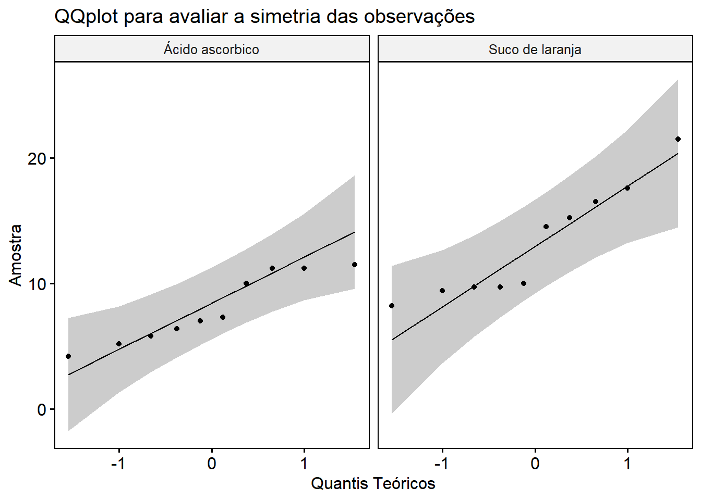
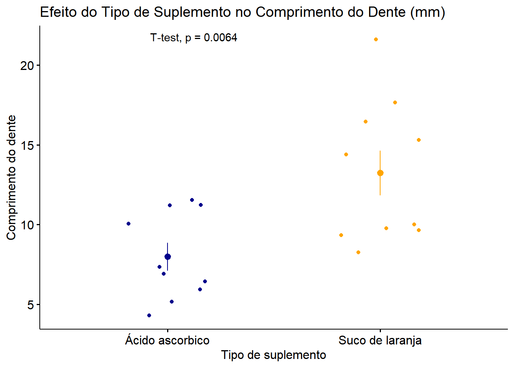

Teste-t: Comparando 2 grupos independentes
O teste-t é um método da estatística utilizado para responder o seguinte tipo de pergunta:
“Existe efeito de uma variável categóricas com 2 grupos ou medidas sobre uma variável continua?”
Quando a variável categórica corresponde a 2 grupos (independentes) chamamos de teste-t independente e quando ela corresponde a duas medidas de um mesmo grupo, chamamos de teste-t pareado.
Por trás dos panos o teste-t verifica se a média dos grupos ou medidas são estatísticamente diferentes. Por conta disso é necessário que a distribuição da variável continua seja simétrica pois a média é um estatística que é muito afetada por valores muito grandes ou muito pequenos. Além disso também é necessário que a variancia entre os grupos sejam aproximadamente iguais. Esses dois requisitos podem ser verificados a partir de outros métodos como teste de shapiro-wilk e qqplot para a simetria e o teste de levene para a variância. Quando esses requisitos não são atendidos é necessário adicionar correções ao teste-t (correção de Welch quando as variâncias não são iguais) ou aplicar outros métodos de comparação de grupo como, por exemplo, o teste U de Mann-Whitney, quando a distribuição é muito assimétrica.
Para exemplificar o uso desse método considere um estudo no o objetivo era avaliar o efeito de duas formas de suplementação de vitamina C no crescimento de dentes de porquinhos-da-india. Os pesquisadores realizaram um ensaio clinico com 2 grupos de cobais onde um grupo recebeu suco de laranja e outro ácido ascórbico.
| Tipo de suplementação | variable | statistic | p |
|---|---|---|---|
| Suco de laranja | len | 0.8927435 | 0.182 |
| Ácido ascorbico | len | 0.8899969 | 0.170 |
| df1 | df2 | statistic | p |
|---|---|---|---|
| 1 | 18 | 3.380434 | 0.083 |
Os Resultados
| Variável | Sexo | Diferença2 | t | 95% IC2,3 | Valor p2 | |
|---|---|---|---|---|---|---|
| Suco de laranja, N = 101 | Ácido ascorbico, N = 101 | |||||
| Comprimento do dente (mm) | 13,2±4,5 | 8,0±2,7 | -5,3 | -3.169733 | -8,8; -1,7 | 0,0064 |
| 1 Média ± DP | ||||||
| 2 Teste t com correção de Welch | ||||||
| 3 IC = Intervalo de confiança | ||||||
Este resultado pode ser interpretado da seguinte maneira:
Os resultados indicam que o comprimento médio do dente foi significativamente maior nas cobaias que receberam suco de laranja (13,2 ± 4,5 mm) em comparação com aquelas que receberam ácido ascórbico (8,0 ± 2,7 mm). A diferença média entre os grupos foi de -5,3 mm, com um intervalo de confiança de 95% de -8,8 a -1,7 mm. Esse resultado foi estatisticamente significativo (t = -3,17, p = 0,006), conforme o teste t com correção de Welch, sugerindo que o tipo de suplemento influencia o comprimento do dente.
